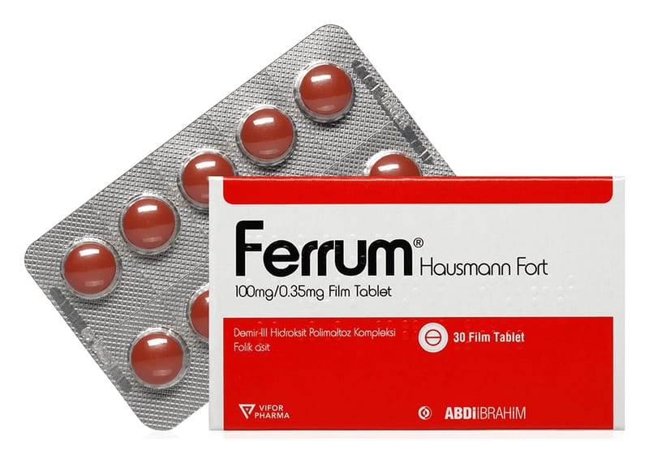

Ferrum Hausmann Fort 100 mg/0,35 mg Film Tablet, 30 Adet

Ne için kullanılır
KT · Bölüm 1FERRUM HAUSMANN FORT, demir III hidroksit polimaltoz kompleksi ve folik asit içeren bir kiremit kırmızı renkli film kaplı tablettir. Her bir film kaplı tableti 100 mg Elementer demir’e eşdeğer miktarda demir III hidroksit polimaltoz kompleksi ve 0,35 mg folik asit içeren 30 film kaplı tabletlik ambalajlarda piyasaya sunulmuştur. Ağız yolu ile uygulanarak, doğal olarak vücutta bütün hücrelerde bulunan ve başta kan yapımı ve oksijenin dokulara taşınması gibi hayati öneme sahip birçok fizyolojik olayda önemli rolü olan demir eksikliğinde veya takviye edilmesi gerektiği durumlarda ihtiyacın giderilmesi için kullanılır. Folik asit, doğmamış çocuğun gelişimi için önemli bir vitamindir. Hamileliğin ilk birkaç haftasında folik asit eksikliği çocukta kusurlu gelişim ve sakatlığa neden olabilir.
FERRUM HAUSMANN FORT:
Folik asit ihtiyacının arttığı gebelik ve emzirme gibi durumlarda gelişen anemili veya anemisiz demir eksikliği tedavisinde veya önlenmesinde endikedir. Demir eksikliği tanısının uygun laboratuvar testleri ile doğrulanması gereklidir.